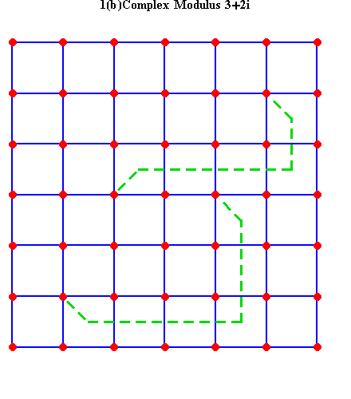
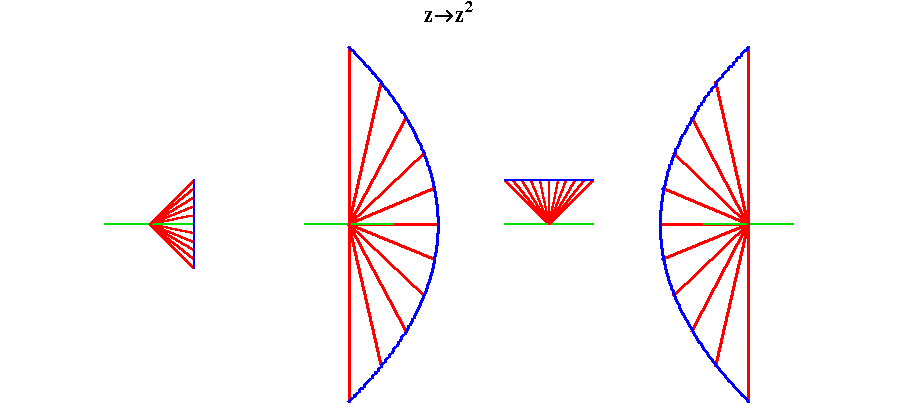
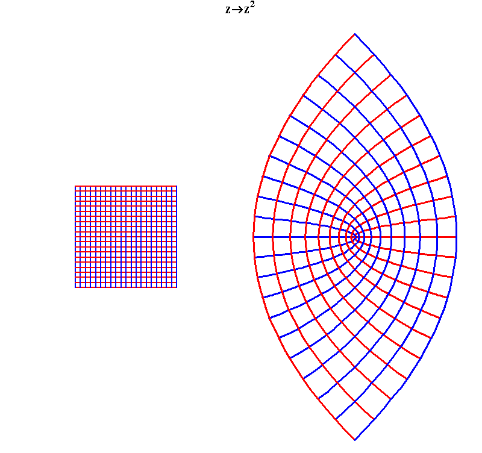
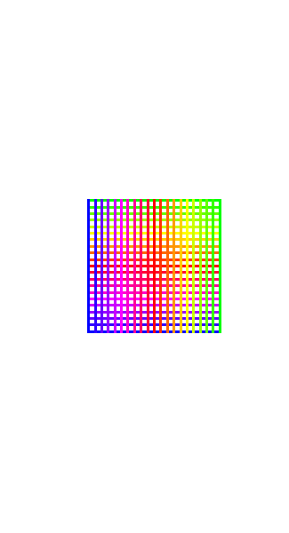
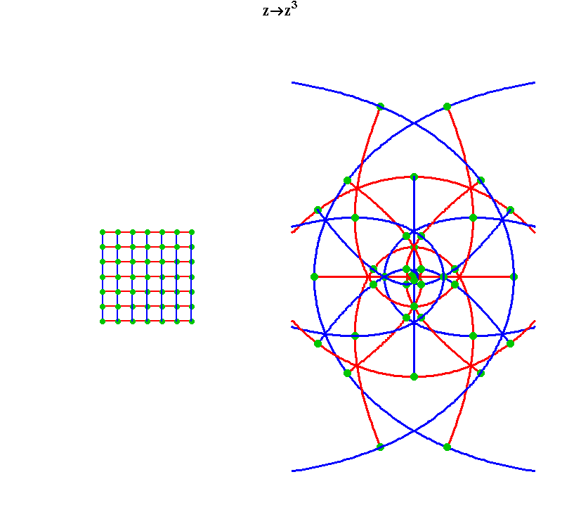
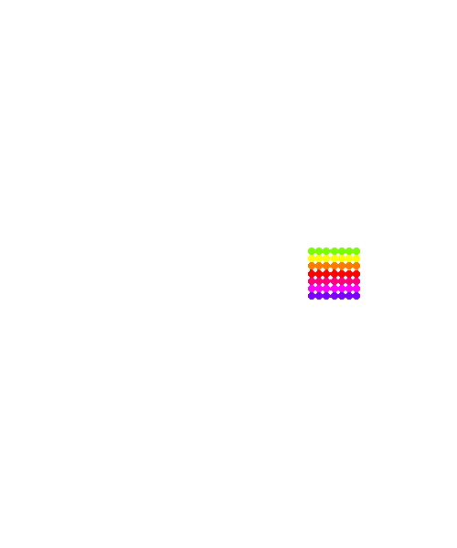
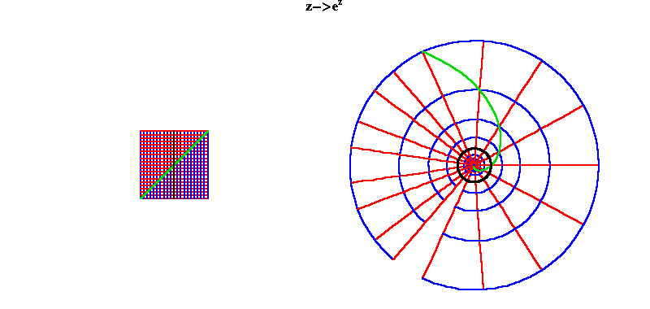
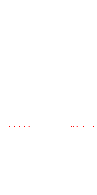

{kind=link}
{kind=link}
{kind=link}
{kind=link}
{kind=link}
Figure 4

Riemann For Anti-Dummies Part 39
To paraphrase Nicholas of Cusa, consumers, like animals, don't count. They have no concept of number. Their mental world is made up only of the things they consume. How those things are produced, what power generates such things, is beyond their ken. Numbers, for them, are mere symbols, that, when manipulated according to a learned set of authoritative rules, (such as the rules of money), have some unexplainable, but psychologically powerful, connection to the things they consume.Such numbers don't count.
"Number", according to Cusa, is, "unfolded reason ... theprime exemplar of the mind". In the Pythagorean tradition of Plato, Cusa recognized that numbers don't count things. Number is the means by which the mind comprehends relations. Not simple relationships among things, but the relationships among relationships. "We conjecture metaphorically from the rational numbers of our mind in respect to the real ineffable numbers of the divine Mind, we indeed say that number is the prime exemplar of things in the mind of the Composer, just as the number arising from our rationality is the exemplar of the imaginal world."
This capacity is a unique human characteristic and is bound up with man's capacity to increase his power in and over the universe. As Prometheus states in Aeschylus' drama, Man was, "in an ignorant condition, living in holes and-- ... utterly without knowledge, until I taught them to discern the rising of the stars and their settings, which are difficult to distinguish. Yes, and numbers, too, chiefest of sciences, I invented for them, and the combining of letters, creative mother of the Muses' arts, with which to hold all things in memory...."
This is the concept of number specific to a healthy producer society. For the consumer milk comes from the supermarket. There is no concept of number associated with this idea other than the symbol appearing on the display of the cash register in response to a computer scanning of a bar code. Contrast this to the numbers that express the relationship of that milk in the supermarket to the dairy farm and transportation system that produced the milk and transported it to the store. Now, think of the higher concept of number associated with the multiply-connected manifold of abiotic, biotic, and cognitive processes that comprise the physical economic relationships of the above transaction. Think still higher of the numbers associated with the multi-generational trajectory in which that multiply-connected physical economic manifold resides. And, still higher to the numbers associated with the manifold of universal principles -- those discovered and those still yet to be discovered -- which have the power to change that trajectory and all that follows from it.
The productive power of the mind counts, and it counts with complex numbers.
To grasp the concept of complex numbers requires the mind be wrenched away from those neurotic, consumerist tendencies that associate numbers with sensible objects. For that reason, a careful study of Gauss' "Disquisitiones Arithmeticae" is highly recommended, as anyone who has had the pleasure of unfolding its wisdom will attest. By the time Gauss composed this opus, at the age of 22, he had already a fully-developed concept of the complex domain, as indicated in the climactic seventh section on the division of the circle. That section, although last in the book, was written first, and the principles expressed there unfold from the opening motivic idea of the work Gauss' concept of congruence.
Gauss generalizes Kepler's notion of harmony by establishing numbers with respect to their intervallic relationship, as distinct from the sense-certainty concept of things. Illustrate this idea (as we have in past pedagogicals) with a simple example. Draw five dots in roughly a circle. Label these dots 0, 1, 2, 3, 4, respectively. Now, connect these dots in sequence. Call that sequence 1. Next, connect every other dot. Call that sequence 2. Next, connect every third dot. Call that sequence 3. The same with every fourth dot. Connecting every fifth dot leads nowhere. Now, try every sixth, seventh, etc.
Calling five a modulus, Gauss' concept of congruence establishes each number by its relationship to all other numbers with respect to modulus five. You should have noticed that sequence 1 and 6, 2 and 7, 3 and 8, etc. produced the same results. Such relationships were called by Gauss "congruent with respect to modulus five". (The difference between two congruent numbers is equal to the modulus.) Also, sequence 2 produced the same result as sequence 3, except in opposite direction. A similar relationship was produced for 1 and 4. Introducing "-"to denote direction, Gauss' congruence is also expressed by the relationships of 1 to -4; 4 to -1; 2 to -3; and 3 to -2.
Think back over this simple exercise. The numbers0, 1, 2, 3, 4, -1, -2, -3, -4, always denote relationships, not things. The initial numbers, 0, 1, 2, 3, 4, denote the relationship of each individual dot to all five. The sequence numbers, both positive and negative, denote relationships among these relationships.
Thus, the modulus, in this case five, denotes not five things, but a type of intervallic relationship among relationships. Inversely, the domain of such relationships denotes five as a prime number, as it establishes a total number of relationships equal to 5 minus 1. (It is suggested the reader try the above experiment with moduli 6, 7, 8, 9, 10, 11 to establish this concept more fully in your mind.)
Underlying these relationships is the "dimensionality" of the domain in which they arise. Each number and each sequence followed its predecessor by the same difference by which it was followed by its successor, i.e., arithmetically. Now, extend this investigation into a doubly-connected, i.e., geometric, domain. To do this think of 1,2,3,4 as sides of squares. 1 and4 produce squares of area 1 and 16 respectively, which, with respect to modulus five are both congruent to 1. 2 and 3 produce squares of 4 and 9 respectively, which with respect to modulus 5are congruent to -1. Thus, with respect to modulus 5, both 1 and-1 are squares! 1 and 4 are √1, and 2 and 3 are √-1 modulo 5! For this and related reasons, Gauss insisted that √-1 be given "full civil rights" with all other numbers, and the domain of numbers should be extended to include them.
"The mathematician always abstracts from the constitution of objects and the content of their relations. He is only concerned with counting and comparing these relations; in this sense he is entitled to extend the characteristic of similarity which he ascribes to the relations denoted by +1 and -1 to all four elements +1, -1, i (√-1) and -i (-√-1)," Gauss wrote in the announcement to his second treatise on biquadratic residues.
Gauss insisted, and repeatedly stated, that this, "complex domain" was a higher concept that existed outside the domain of the senses, but, "the true metaphysics of these magnitudes could be placed in a most excellent light", by representing these relationships as a quadratic array on a doubly extended surface:
"To form a concrete picture of these relationships it is necessary to construct a spatial representation, and the simplest case is, where no reason exists for ordering the symbols for the objects in any other way that in a quadratic array, to divide an unbounded plane into squares by two systems of parallel lines, and chose as symbols the intersection points of the lines. Every such point A has four neighbors, and if the relation of A to one of the neighboring points is denoted by +1, then the point corresponding to -1 is automatically determined, while we are free to choose either one of the remaining two neighboring points, to the left or to the right, as defining the relation to be denoted by + i. This distinction between right and left is, once one has arbitrarily chosen forwards and backwards in the plane, and upward and downward in relation to the two sides of the plane, in and of itself completely determined, even though we are able to communicate our concept of this distinction to other persons only by referring to actually existing material objects.*
[* Kant already had made both of these remarks, but we cannot understand how this sharp-witted philosopher could have seen in the first remark a proof of his opinion, that space is only a form of our external perception, when in fact the second remark proves the opposite, namely that space must have a real meaning outside of our mode of perception.]
"The difficulty, one has believed, that surrounds the theory of imaginary magnitudes, is based in large part to that not so appropriate designation (it has even had the discordant name impossible magnitude imposed on it). Had one started from the idea to present a manifold of two dimensions (which presents the conception of space with greater clarity), the positive magnitudes would have been called direct, the negative inverse, and the imaginary lateral, so there would be simplicity instead of confusion, clarity instead of darkness," Gauss wrote in his second treatise on biquadratic residues.
Thought of in this way, each complex number denotes a two-fold complex of direct and lateral action, or, rotation and extension. The physical example Gauss gave for this relationship was the motion of the bubble in a plane leveller. The bubble could only move back and forth if the ends of the level moved up and down.
Gauss' idea of complex numbers extends his concept of congruence, by which the relationships among numbers are grasped, to the complex domain, by which relationships among a set of relations can be comprehended. Just as his earlier concept of a modulus expressed a simple intervallic relationship among numbers, the complex modulus expressed a complex interval. (See figure 1a, and figure 1b.)
 |
As discussed in the most recent previous installment (Part38), Gauss' concept also establishes a proportional relationship among complex numbers. This idea is otherwise known as complex multiplication as the accompanying figures from Part 38 illustrate.
Riemann took the next step further by establishing a means to comprehend a relationship between two complex surfaces. Such relationships he called, "functions of a complex variable", which are in effect a relationship among sets of relations, in which each set is itself a relationship among sets of relations.
Again, take an example from last time. In figure 2 the vertical and horizontal lines are not simple lines. Rather they represent a relationship among the complex numbers situated on them. Each complex number itself denotes a doubly-extended relationship. The lines express a simple relationship among these doubly-extended relations, i.e., a relationship among a set of relations.
Figure 2  |
The function, in this case squaring, is therefore, a function between two sets of relationships among sets of relations, and consequently enables the mind to comprehend a higher order of change. (see figure 3.)
Figure 3  |
Under this transformation the straight-line pathways under which the complex numbers of the first surface are related, are transformed into parabolic pathways in the second surface. Both sets of pathways remain orthogonal under the transformation. Consequently, it were impossible to distinguish one from the other, except by some physical measurement which could measure the transformation itself, not the individual pathways, as, for example, a measurement of a change in geodesic.
This takes on even more startling implications when viewed from the standpoint of Riemann's complex functions, for which we can gain an intuitive insight by animating the transformation of figure 3. (See animation 1.) Notice how the blue side of the straight-line pathways folds under the green, so that when the transformation is completed what appeared initially to be one set of parabolic pathways has been shown to be two, one on top of the other. This begins to form an intuitive idea of a Riemann surface, of which much more will be said in future installments.
Animation 1  |
Extend this same investigation for a simple cubing function.(See figure 4.)
Figure 4 |
Figure 5  |
When animated, the "cubed" surface folds under itself three times. (See animation 2.)
Animation 2  |
Much more will be said on this in future installments, but to conclude look at the complex exponential transformation. Under this transformation, vertical lines become circles, horizontal lines become radii, and diagonal lines become spirals. (See figure 6.) As in the early examples of the squaring and cubing, the angles between all these lines is unchanged under the transformation. In the figure the black vertical line is the line going through √-1 and -√-1. Everything to the left (negative) side of this line is mapped inside the circle formed by this line while everything to the right (positive) side of this line is mapped outside that circle.
Figure 6  |
When this transformation is animated the nature of the Riemann surface so produced can be intuitively seen. As the vertical lines grow, their corresponding transformations form circles. Once the straight lines extend to a length of 2Pi, (illustrated in the animation by a change of color), the corresponding circle begins to wrap on top of the previous layer. A new layer of circles is added each time the lines are extended an additional length of 2Pi. Thus, the infinitely extended lines are transformed into an infinite number of layers of circles!
Animation 3  |
Much more will be said. For now, have fun getting to know how to think this way.
{kind=link}
{kind=link}
{kind=link}